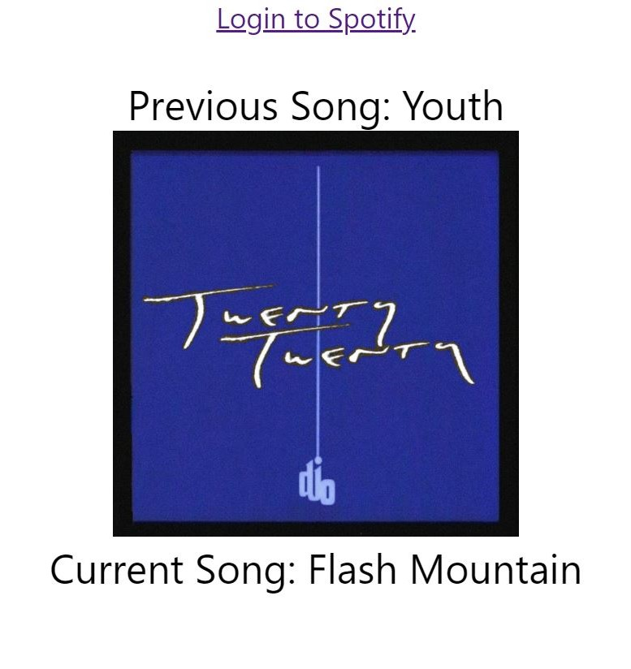

ABOUT ME
CX, Data, Professional Services, Post Sales Engineer with a Bachelor of Science (B.S.) in Mechanical Engineering from the Georgia Institute of Technology. Experienced in multiple programming languages, frameworks, and engineering software. Developed multiple applications and projects using programming tools and languages, such as Python, JavaScript, HTML, CSS, SQL, C, React.js, etc.
Program Languages
- Python
- JavaScript
- HTML
- CSS
- C
- SQL
- MATLAB
Framework/Library
- PySpark
- Pandas
- OpenCV
- React.js
- Flask
- D3.js
- Liquid
Software/Tools
- Git
- AWS Lambda
- AWS S3
- Mode SQL
- Tableau
- JIRA
- Oracle VM VirtualBox
Hardware
- Raspberry Pi
- Arduino
- TI MSP Launchpad
- Circuit Design
Design
- Adobe Photoshop
- Adobe Premier Rush
- Inkscape
- SolidWorks
- AutoCAD
Languages
- English
- Spanish
- Portuguese
EXPERIENCE
LEADSPACE
Professional Services Engineer
January 2022 – May 2024
- Supported the entire sales lifecycle across several large clients, partnering with cross functional peers in customer success, account management, product, and engineering to close gaps in the implementation and go-live journey
- Cultivated strong client relationships by providing prompt customized solutions that catered to their evolving needs, directly preventing client churn and resulting in upsell opportunities of $750K+
- Refactored and evolved legacy Airflow DAGs, reducing technical debt and total cost of ownership with minimal downtime for deployments at Leadspace's two largest revenue-generating projects, valued at over $XM
- Streamlined client-engineer communication and project visibility by implementing a centralized Jira process and dashboard for feature requests, project timeline forecasting, status tracking, and resource allocation
- Built a custom match level confidence scoring algorithm using Python to address clients' inability to assess the reliability of their customer data records, enabling clients to prioritize high-quality records for outreach
- Implemented ETL pipeline to consolidate and clean over 14M records of client data sourced from disparate systems, unifying and optimizing the data pipeline to enable precise sales lead scoring, account matching, and targeted marketing campaigns for multiple clients
- Developed reusable exploratory data analysis and pipeline primitives (PySpark, Pandas, SQL, Kibana) over the core Google Cloud data warehouse, reducing the overall cost of demo preparation and post-sales implementation for multiple solutions engineers across multiple client projects
- Built, managed, and maintained Databricks workflow to query customer data warehouses for daily data refresh, the reporting of daily aggregated lead generation metrics, and notification of data quality violations
APPEN
Professional Services Engineer
July 2020 – January 2022
- Implemented JavaScript, Python, and Liquid Logic scripts to configure clients' AI training data annotation platform on Appen, designing manual annotation tasks for unstructured data that enabled a human workforce to provide high-quality, reliable training datasets, significantly enhancing the performance of the clients' AI models
- Led development of ETL workflows, reusable scripts, and new data annotation workflows, managing requirements and expectations of internal and external stakeholders and refining the customer journey in partnership with software engineers, project managers, and customer success managers
- Developed custom user interface using Javascript, D3, and JQuery to enable trusted annotators to review, validate, and correct coded data produced by less experienced annotators, ensuring high-quality training data and a reliable annotation workforce
- Developed and integrated a computer vision algorithm using Python OpenCV to intelligently track annotated objects that temporarily left a camera's field of view, preventing them from being misclassified as new entities upon re-entry; increased the tracking time from ~1 second to over a minute
- Took over an off track and at risk pilot project, repairing customer trust and resulting in a contract by clarifying requirements early and often, maintaining clear and frequent communication, and creatively building new automated and scalable processing pipelines using Appen's webhook and AWS for the client's unique use case
- Acted as an interim hiring manager to the Professional Services team following a period of high attrition by revamping the interview process, updating the technical interview, interviewing ~10 new candidates, hiring and onboarding 5 engineers, and training the PS team's new manager
- Evangelized software engineering and DevOps best practices the Professional Services team; introduced and standardized the usage of Github, performance tuned frequently used scripts, and refactored our codebase to be more readable and maintainable as the team grew
GEORGIA TECH RESEARCH INSTITUTE
CIPHER Student Assistant
October 2018 – January 2020
- Prototyped Software Defined Network (SDN) techniques using software image OpenWrt with a Linksys WRT32X router, Open vSwitch with Raspberry Pi, and Zodiac FX OpenFlow Switch for military communication
- Implemented a keylogging program in C in order to test how efficient a program can track keyboard inputs
- Learned Linux and Python to test and interact with multiple code base for existing and future projects
ARCHER WESTERN
Project Engineer Intern
May 2018 – October 2018
- Assisted project manager on Clear Creek West Sewer Improvement Project
- Routinely surveyed jobsite and operated DJI drone to monitor quality control, safety, and project development
- Managed engineering drawings and subcontractor quantities to track project's units complete for monthly cost report
Construction Estimator Intern
January 2018 – April 2018
- Analyzed engineering drawings and Department of Transportation (DOT) parameters for quantity take-offs using the On-Screen Take-Off program
- Appraised national projects based on scope changes including revision of specifications, standards, and quantities
- Produced regular reports regarding DOT bid specifications for $100,000,000+ DOT projects
- Managed intern team by designating job roles to meet project deadlines as liaison between interns and management
TI AUTOMOTIVE
Quality Engineer Intern
May 2016 – August 2016
- Directed a team of 5+ new hires to perform quality control tests in the BMW X5 G01 gas tank trial
- Executed 10+ tests to analyze quality of tanks and filler pipes daily
- Formulated and enforced new work protocol tests to analyze quality of gas tanks and filler pipes
- Trained new employees on proper testing operations and effectively using aforementioned work protocols
PROJECTS
ROUTELANTA RUNNING APP
- Web-Based application that visualizes, classifies, and recommends running routes and displays points of interest in a map of Atlanta using D3.js, SciKit Learn, and K-Means Clustering
- Analyzes user running data by requesting Strava API responses in Python and SciKit Learn
- Implements K-Means Clustering to classify running routes by difficulty based on distance and height gain


SPOTIFY TO VISUAL APP

- Web application that tracks user's current Spotify song, and displays a gif based on music genre using Spotify API
- Displays current song playback information to a front-end client display using a React.js & Node.js
FOLLOW THE DOT ROBOT
- A robot that detects and follows 2D movement of a colored pin within a system using stepper motors, motor driver, MSP Launchpad, and camera
- Movement of colored pin is detected using a camera with Python OpenCV running to send coordinates to the MSP Launchpad using UART communication
- A stepper motor control program written in C is flashed onto the MSP Launchpad to control the robot's pointer based on the coordinates the Python program dictated

PHOTOGRAPHY